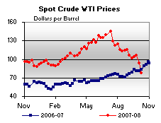
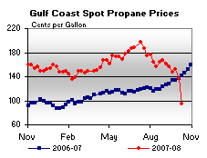
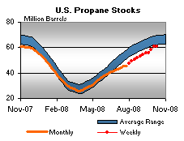

This Week In Petroleum Text
Released on October 16, 2008
(Next Release on October 22, 2008)
Winter Outlook for Propane
As the 2008-09 heating season gets underway, many propane consumers might be thinking about filling their propane tanks ahead of the cold winter months. But what cost will consumers face this year following a summer stockbuilding season in which spot propane prices hit record highs at the major trading hubs of Mount Belvieu, Texas and Conway, Kansas? Filling those tanks could cost consumers more this year than last year. According to the October 2008 issue of the Short-Term Energy and Winter Fuels Outlook, propane-consuming households are projected to see an average increase of $188 (11 percent) in propane expenditures this winter compared with last year.
Uncertainties about the adequacy of inventories and future propane prices typically pose some concern for consumers during the heating season, particularly if the United States experiences severe winter weather. Propane consumers faced this situation last year when unseasonably low inventories cast some doubt about the adequacy of propane supplies heading into winter. Fortunately, consumers were spared the potential effects of market volatility because of the near-normal temperatures experienced over most of the Nation. Propane consumers may hope for a repeat of last winter’s mild weather, since current inventory levels, again, are relatively low. In fact, some regions are forecasted to have winters even milder than last year. For example, the National Aeronautics and Aerospace Administration (NOAA) is projecting this winter season (October through April) to be 4 percent milder than last year for the West North Central area of the Midwest region, a major propane consuming area.
Propane stocks as of October 3 were about 61 million barrels, the second lowest level for this time of year since 2000 and close to the 60-million barrel level that is sometimes cited as minimally required at the start of the heating season to meet normal demand requirements over the winter. The April through September stockbuild was about 4 million barrels less than the most recent 5-year average of about 39 million barrels. Several factors moderated the stockbuild this year: below-average imports; a brief summer spike in petrochemical feedstock demand for propane; and lost production resulting from Hurricanes Gustav and Ike. The sub par seasonal stockbuild this year is depicted in the chart below as the area between the blue dotted line and the production and net imports or propane supply line.
Nationwide, almost six percent of households heat with propane. But regionally, a different picture emerges since propane heating markets are exceedingly diverse. The Midwest is the largest residential propane consuming area with almost 9 percent of households using the fuel for home heating. As of October 3, 2008, the Midwest reported inventories at 25 million barrels, a level near the upper boundary of the average range for this time of year. Portions of the Midwest are projected to be milder than last winter, so supplies may be adequate for this region. The Northeast section of the East Coast is another propane-heating region, where about 4 percent of the households rely on the fuel. On the East Coast, inventories stood at 4 million barrels, a level near the lower boundary of the average range. The Gulf Coast region, an area with one of the lowest concentrations of consumers who use propane as a primary heating fuel, reported inventories at 29 million barrels, a level slightly below the average range for that time of year. While Gulf Coast inventories represent nearly half the U.S. total, and are an important source of propane resupply to the consuming areas of the East Coast and Midwest, limited pipeline and other transportation capabilities remain an obstacle for moving substantial volumes of propane to these areas on short notice, particularly during peak winter demand periods.
Thus, propane market observers will likely focus on the speed at which Gulf Coast refineries, gas processing plants, and other propane industry infrastructure fully returns to normal levels over the next few weeks. With limited capability to make up hurricane lost supply, propane markets are likely to remain relatively tight this year with the potential for some upward pressure on residential prices if the United States experiences much colder-than-normal weather. It also should be noted, however, that propane prices could see more downward pressure, should crude oil and natural gas prices continue to fall or if the economic downturn significantly reduces propane demand in the petrochemical sector.
Residential Heating Fuel Prices Plunge Downward
Residential heating oil prices plummeted over the period ending October 13, 2008. The average residential heating oil price dropped 27.9 cents last week to reach 338.4 cents per gallon, an increase of 59.0 cents from this time last year. Wholesale heating oil prices plunged by 40.2 cents to reach 235.1 cents per gallon, an increase of 3.1 cents compared to the same period last year.
The average residential propane price decreased by 5.8 cents, landing at 260.2 cents per gallon. This was an increase of 44.9 cents compared to the 215.3 cents per gallon average for this same time last year. Wholesale propane prices decreased substantially, by 33.5 cents per gallon, dropping from 144.4 cents to 110.9 cents per gallon. This was a loss of 36.0 cents from the October 15, 2007 price of 146.9 cents per gallon.
U.S. Average Gasoline Price Plunges by 33 Cents, Largest Weekly Drop in History
The U.S. average price for regular gasoline plummeted by 33.3 cents to hit 315.1 cents per gallon. The price was the lowest since February 25 of this year though still 38.9 cents above the price at the same time last year. Prices were sharply lower in all regions of the country. The national average price has now fallen for four weeks in a row, with a cumulative drop of more than 68 cents per gallon. The price on the East Coast fell 32.1 cents to 322.3 cents per gallon. In the Midwest and Gulf Coast regions, the average price tumbled by more than 40 cents and as a consequence the average price in both regions slipped below $3 a gallon. The price dropped 40.1 cents to 299.2 cents per gallon in the Midwest and shot down by 44.6 cents to 299 cents per gallon in the Gulf Coast. The price in the Rocky Mountains fell 22.8 cents to 326.8 cents per gallon. Dropping for the sixteenth consecutive week, the price on the West Coast fell another 14.7 cents to hit 342.1 cents per gallon. The price in California lost 13.1 cents to settle at 347 cents per gallon.
Plunging 21.6 cents, the U.S. average diesel price hit 365.9 cents per gallon, the lowest price since March 3 of this year. The drop was the largest weekly decline since October 31, 2005, when prices fell just over 28 cents. Prices fell precipitously in all regions of the U.S. The price on the East Coast slid 21.9 cents to hit 370.9 cents per gallon. Dropping 21.7 cents, the price in the Midwest was 364.1 cents per gallon. The average price in the Gulf Coast hit 363.1 cents per gallon, a fall of 21.2 cents. The price in the Rocky Mountains decreased 18.9 cents to 369.7 cents per gallon. For the first time since EIA began collecting retail diesel prices, the West Coast had the lowest average price of any region, tumbling 22.5 cents, to 362.2 cents per gallon. In California, the average also dropped by more than 20 cents, falling 21.3 cents to 365.6 cents per gallon.
Propane Build Slows
The post-seasonal build in propane inventories slowed last week with a reported 0.3 million-barrel gain that moved stocks higher to an estimated 61.2 million barrels as of October 10, 2008. As production capacity continues to be restored from Hurricanes Gustav and Ike, inventory gains may continue through October and possible into early November, barring an early season cold spell. Regional gains were limited to the Midwest last week with a reported a 0.4 million barrel increase, while the combined Rocky Mountain/West Coast region remained relatively flat during this same time. The East Coast and Gulf Coast inventories both dropped by 0.1 million barrels. Propylene non-fuel use inventories were sharply lower last week with a 0.8 million barrel loss that dropped the share of this fuel to 5.2 percent of total propane/propylene inventories. The prior week’s share totaled 6.5 percent.
Text from the previous editions of “This Week In Petroleum” is now accessible through a link at the top right-hand corner of this page.
| |
|
| Retail Prices (Cents Per Gallon) |
 |
|
|
|
| Retail Data |
Changes From |
Retail Data |
Changes From |
| 10/13/08 |
Week |
Year |
10/13/08 |
Week |
Year |
| Gasoline |
315.1 |
 -33.3 -33.3 |
 38.9 38.9 |
Heating Oil |
338.4 |
-27.9 |
59.0 |
| Diesel Fuel |
365.9 |
-21.6 |
62.0 |
Propane |
260.2 |
-5.8 |
44.9 |
|
| Spot Prices (Cents Per Gallon*) |
|  |
|
|
|
| Spot Data |
Changes From |
| 10/10/08 |
Week |
Year |
| Crude Oil WTI |
77.44 |
-16.47 |
-6.29 |
| Gasoline (NY) |
197.3 |
-32.7 |
-15.9 |
| Diesel Fuel (NY) |
234.1 |
-36.8 |
2.6 |
| Heating Oil (NY) |
225.6 |
-35.7 |
2.5 |
| Propane Gulf Coast |
95.3 |
-41.9 |
-46.6 |
|
 |
| *Note: Crude Oil WTI Price in Dollars per Barrel. |
|
| Stocks (Million Barrels) |
|
|
 |
 |
| Stocks Data |
Changes From |
Stocks Data |
Changes From |
| 10/10/08 |
Week |
Year |
10/10/08 |
Week |
Year |
| Crude Oil |
308.2 |
5.6 |
-13.7 |
Distillate |
122.1 |
-0.5 |
-14.2 |
| Gasoline |
193.8 |
7.0 |
-2.0 |
Propane |
61.153 |
0.277 |
0.779 |
|
| |